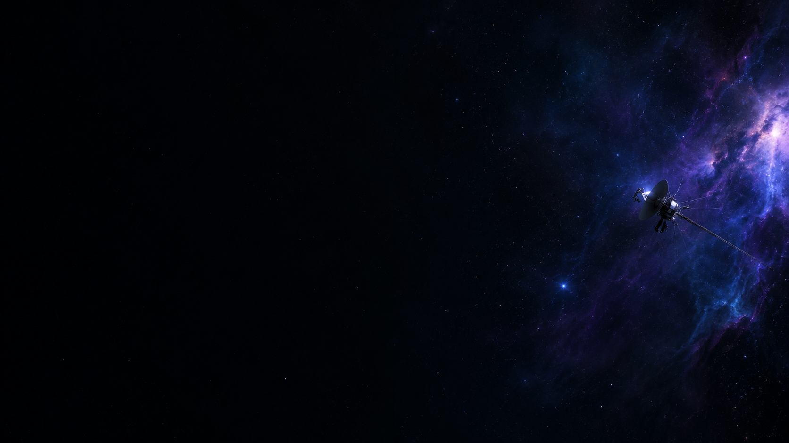

Voyager's Note
우주를 읽는 두 가지 시선. 밤하늘의 낭만부터 우주 산업의 최전선까지.
우주를 향한 호기심의 온도는 저마다 다릅니다
보이저스 노트는 반짝이는 별빛에서 위로를 얻는 당신을 위한 '감성 큐레이션'과, 거대한 우주 산업의 흐름을 쫓는 전문가를 위한 '심층 분석 리포트'를 동시에 발행합니다. 당신의 취향과 목적에 맞춰 광활한 우주와 연결되는 나만의 궤도를 설정해 보세요.

오직 당신의 궤도에 맞춘 컨텐츠
- 스타라이트 라운지 : 도심 속 밤하늘 산책 가이드, 별자리에 얽힌 신화, 그리고 천체 사진가들의 따뜻한 비하인드 스토리를 전합니다.
- 딥 스페이스 랩: 뉴 스페이스 시대의 글로벌 투자 동향, 재사용 로켓 기술, 제임스 웹(JWST) 관측 데이터의 산업적 파급력을 분석합니다.
- 맞춤형 인사이트 보관소: 선택한 플랜에 맞춰 에디터와 항공우주 전문가가 엄선한 아티클이 매주 당신의 메일함으로 배달됩니다.
보이저스 노트 탑승 가이드
- 궤도 설정: 낭만을 채워주는 '스타라이트 라운지'와 인사이트가 담긴 '딥 스페이스 랩' 중 원하는 구독 플랜을 선택합니다.
- 매주 금요일 수신: 당신이 설정한 궤도에 맞춰 큐레이션된 고품질 뉴스레터가 매주 금요일 오전 8시에 도착합니다.
- 전용 라운지 입장: 구독자 전용 웹사이트에 접속하여 과거의 감성 에세이부터 산업 리포트까지 모든 아카이브를 무제한으로 열람합니다.
정기 구독 신청하기
이번 주 금요일 아침, 일상 속으로 우주의 경이로움을 배달해 드립니다.